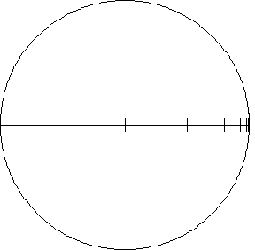
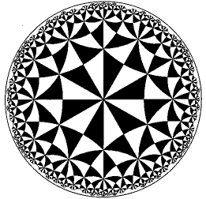

Hyperbolic distance and triangle congruency
| Something funny must happen with hyperbolic distance if a region of infinite hyperbolic extent can be contained within a bounded region of the Euclidean plane. |
| Roughly, the closer we are to the circle C bounding the Poincare disc, the more our Euclidean eyes will see the hyperblic ruler shrinking. |
|  |
| Vertical segments indicate equal hyperbolic lengths |
| Here is a sample calculation of hyperbolic distance. |
| Computing distances in hyperbolic geometry is difficult, so constructing tilings may appear particularly challenging. Two hyperbolic triangles that look different may be congruent, but this will be a bother if determining congruence requires establishing that corresponding sides have the same lengths, and that must be done by integration. |
| However, in some ways hyperbolic geometry is much more rigid than Euclidean geometry, because |
| in hyperbolic geometry, similarity implies congruence. |
| That is, to show hyperbolic triangles are congruent, it suffices to examine their angles. If corresponding angles are equal, the triangles are congruent. |
| The proof of this is not too difficult, but uses Saccheri quadrilaterals. This is a construction with which Saccheri attempted to prove the parallel postulate was a consequence of the other four. In fact, he was proving theorems in hyperbolic geometry, though he did not know this. |
| Using similarity implies congruence, establishing that our constructions are tilings is relatively simple. |
|  |
| Looking at this diagram, we see many hyperbolic triangles. Corresponding angles in all these triangles are equal and so all the triangles are congruent. |
| There are also congruent hyperbolic hexagons in this tiling. Can you find them? |
Return to hyperbolic geometry.